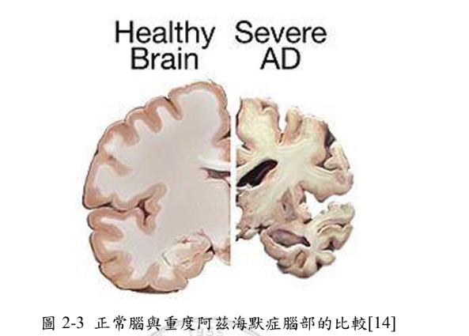
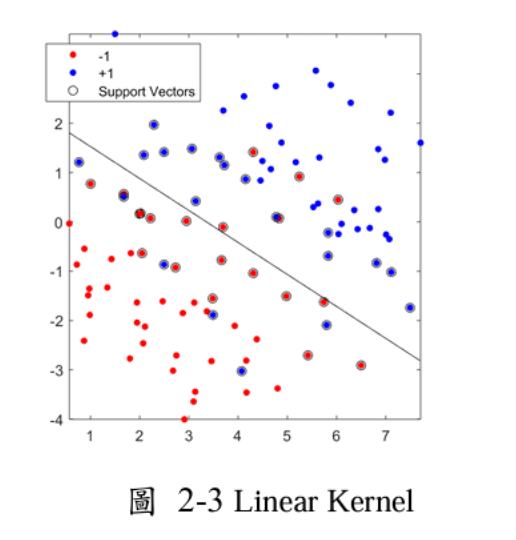
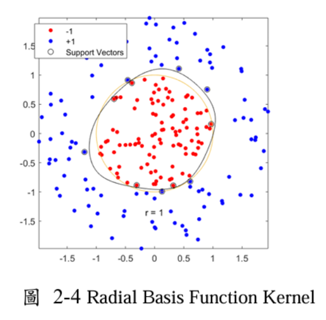
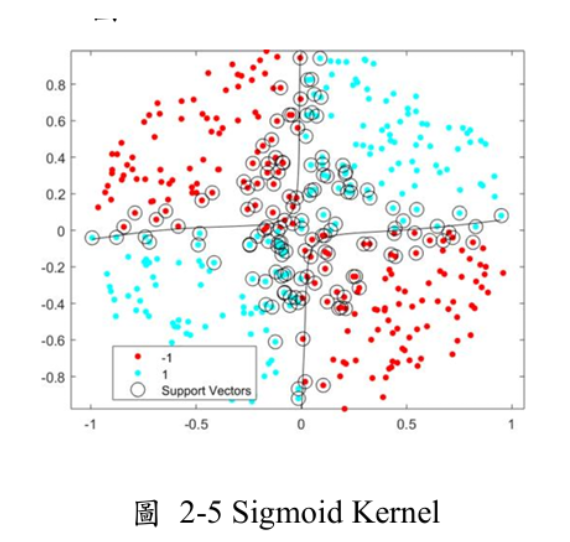
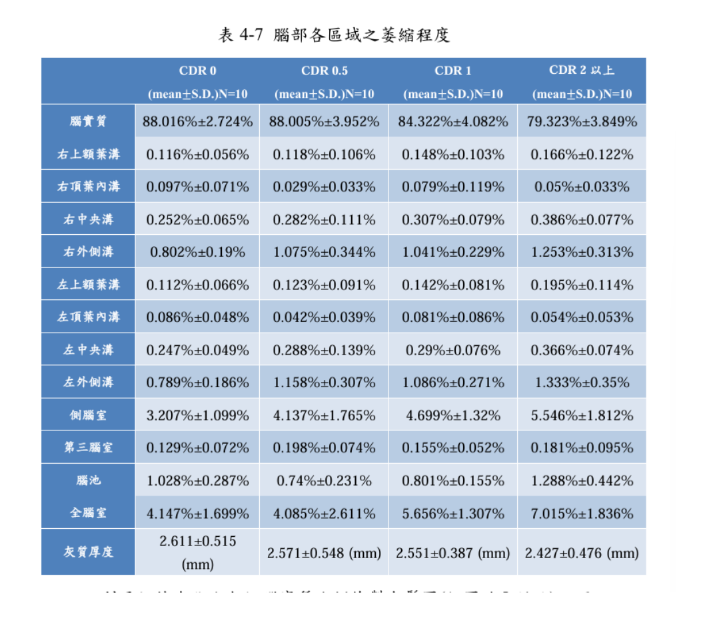
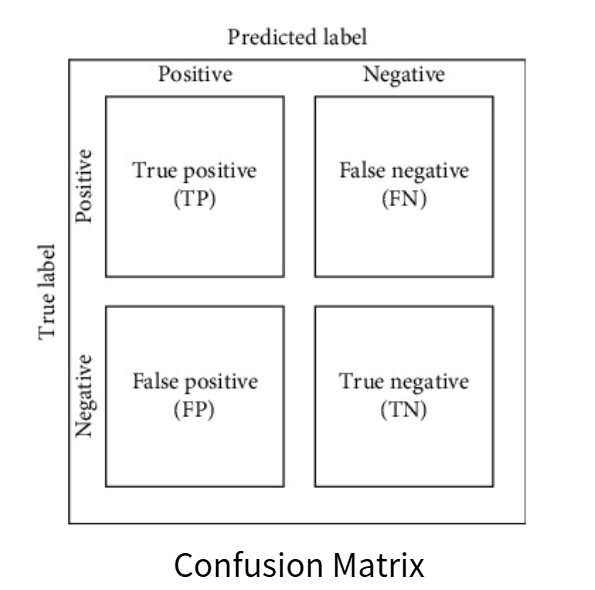
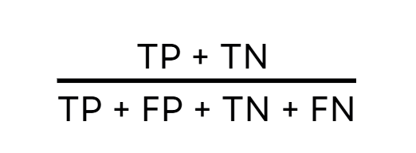
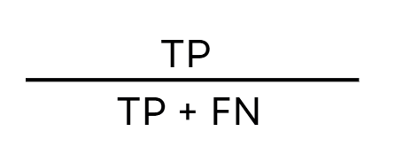
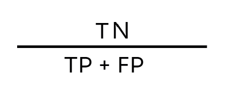

人工智慧在阿茲海默症診斷與預測中的應用
計算機概論 Group9
阿茲海默症診斷現狀
阿茲海默症是一種神經退化性疾病，其特徵是大腦中異常蛋白質的積累，早期檢測和準確診斷對於治療和護理至關重要
病理特徵:
- 神經纖維纏結：由 Tau 蛋白異常堆積導致
- 老年斑塊：由 β-澱粉樣蛋白 (Aβ) 沉積形成
初期異常蛋白侵害海馬迴與大腦皮質，導致記憶和認知功能受損。隨病情惡化，患者腦神經逐漸萎縮

挑戰：
- 依賴主觀臨床評估(如 CDR 量表)
- 缺乏統一的診斷方法
人工智慧工具提供了更客觀和精確的評估潛力
電腦輔助診斷系統：
數據集來源和處理
數據來源於雙和醫院醫學神經內科，60 組病人（ 65 至 95 歲）：
- 60 組 CT 掃描（40 組訓練，20 組測試）
- 25 組 MRI 掃描用於額外驗證
採樣部位(左右腦共14個參數)
腦溝：外側溝(Sylvian Fissure)、中央溝(Central Sulcus)、上額葉溝(Superior Frontal Sulcus)、頂葉內溝(Intraparietal Sulcus)
腦室：腦室中所占容積最大之側腦室(Lateral Ventricle)、與側腦室連通之第三腦室(Third Ventricle)、腦池(Cerebral Cistern)
影像處理及資料分析：
影像處理去除 CT 影像中的胡椒鹽雜訊、分割腦組織與結構，並計算腦組織體積及灰質厚度
資料分析透過與 MRI 的重疊率、訊號雜訊比 (SNR) 和平均絕對誤差 (MAE) 來評估處理效果及準確性
模型訓練與測試
支援向量機 Support Vector Machine（SVM）為監督式學習方法，通過找到不同類別之間的「最佳決策邊界」（超平面）來進行
SVM 的目的是根據患者的影像特徵，將數據分類對照：CDR0、CDR0.5、CDR1、CDR2
Kernel：讓SVM可以從線性分類轉換到非線性分類上：
- 二維直線(Linear Kernel)
- Polynomial 高次方轉換
- 高斯轉換 Radial Basis Function(RBF)
- sigmoid kernel



(以臨床CDR為基準，建立混淆矩陣)用於測試模型
模型訓練: 建立阿茲海默症CDR個等級的判斷標準
- 輸入特徵 X = [左右腦之外側溝(Sylvian Fissure)、中央溝(Central Sulcus)、上額葉溝(Superior Fronta Sulcus)、頂葉內溝(Intraparietal Sulcus、側腦室(Lateral Ventricle)、第三腦室(Third Ventricle)、腦池(Cerebral Cistern)]
- 40組CT影像(臨床CDR值為0、0.5、1、2+各10組)
- 用 RBF 核函數計算數據點之間的非線性關係
- SVM 找到不同類別（CDR0、CDR0.5、CDR1、CDR2+）之間的最佳決策邊界
模型測試
- 給定一位新患者的數據 Xnew = [左右腦之外側溝(Sylvian Fissure)、中央溝(Central Sulcus)、上額葉(Superior Frontal Sulcus)、頂葉內溝(Intraparietal Sulcus)、側腦室(Lateral Ventricle)、第三腦室(Third Ventricle)、腦池(Cerebral Cistern)]
- 利用20組患者CT影像，以臨床CDR為基準，建立混淆
- 通過 SVM 模型計算 Xnew 與決策邊界的距離，預測該患者屬於CDR0、CDR0.5、CDR1、CDR2+哪一類

結果分析與性能評估
混淆矩陣（Confusion Matrix）: 用來評估模型預測結果的工具，可以清楚地顯示模型預測正確和錯誤的次數
- TP(True Positive)：實際為有病，預測為有病
- FP(False Positive)：實際為無病，預測為有病
- TN(True Negative)：實際為無病，預測為無病
- FN(False Negative)：實際有病，預測為無病

評估指標
- 準確率(Accuracy)

- 敏感度(Sensitivity)

- 特異度(Specificity)

- 可信賴度(Kappa Value)
增加準確性之重訓練
由於 CDR 量表評估具有一定主觀性，因此在重訓練組中，排除了腦實質體積比例與 CDR 等級之間存在顯著不一致或明顯偏差的病例，以確保資料的準確性和模型訓練的一致性。
- 準確率(Accuracy)：before 80%，after 88%
- 敏感度(Sensitivity)：before 86.6%，after 100%
- 特異度(Specificity)：before 84.6%，after 84.6%
- 可信賴度(Kappa Value)：before 0.547，after 0.699
其他可增加準確性之方法
- grid search 網格搜索
- 5-fold cross-validation 交叉驗證
未來挑戰與趨勢
挑戰：
- 資料不足
- 隱私問題
- CT影像於灰白值分離之技術處理
展望：